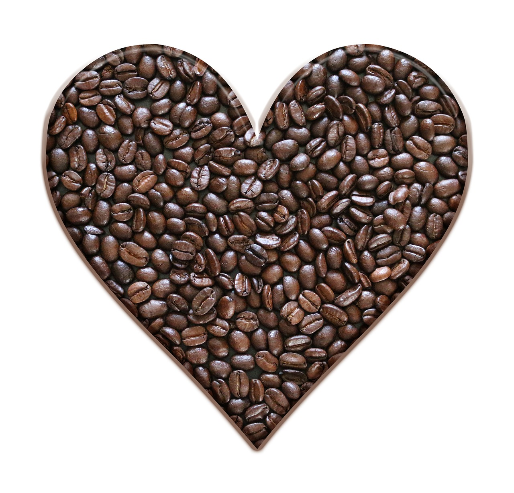

Welcome to the Local Coffee Montana
Come discover some of the best coffee shops in Montana and get some tips for coffee lovers.
Why were here
The Local Coffee shouts out local coffee shops that have impacts on the community in Montana. This site gives insight on how to make your own specialty coffee at home and places that you can go and get one made special for you. We also offer a fun quiz you can take to see how much you know about the industry.
Passion
The Local Coffee Montana is a passion project to promote dedicated specialty coffee shops. It is a resource for people coming to Montana wanting to know where some local spots are.